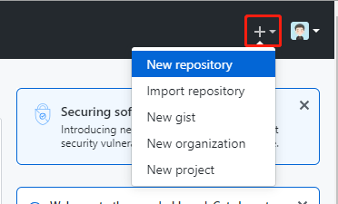
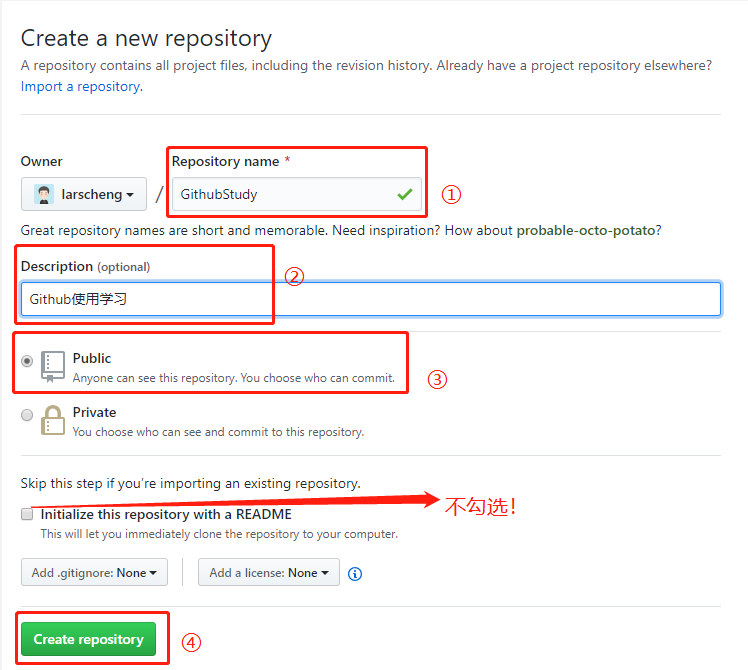
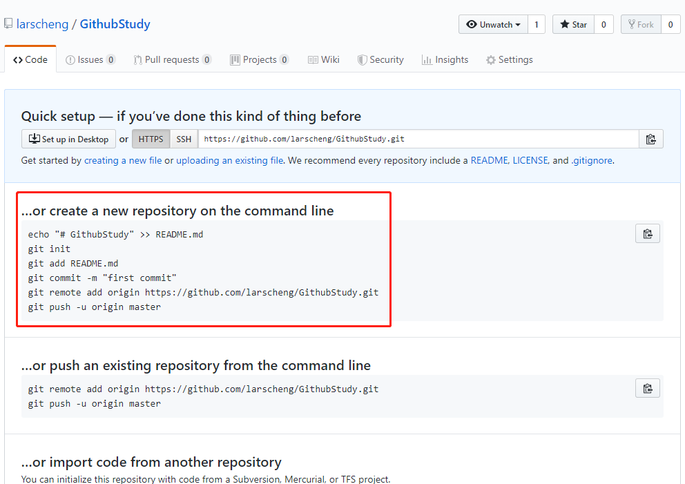
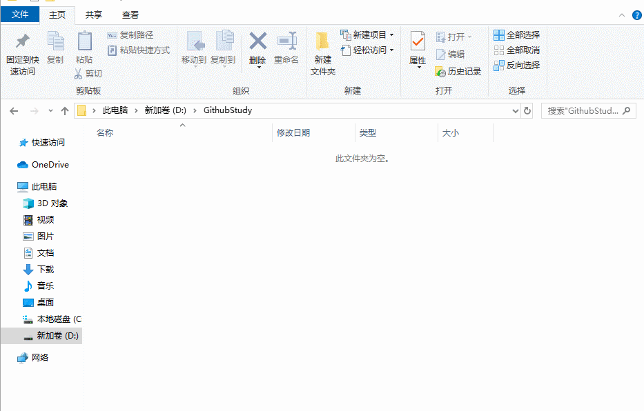
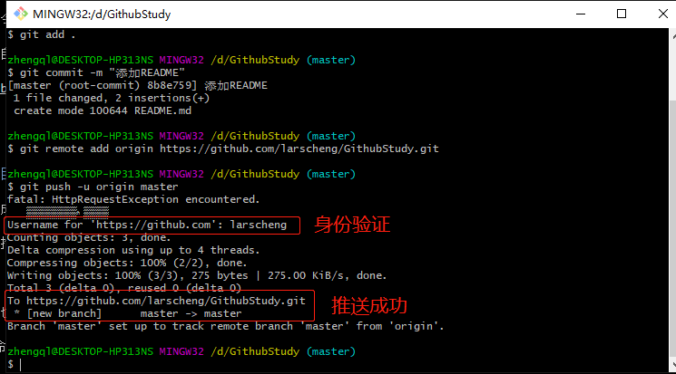
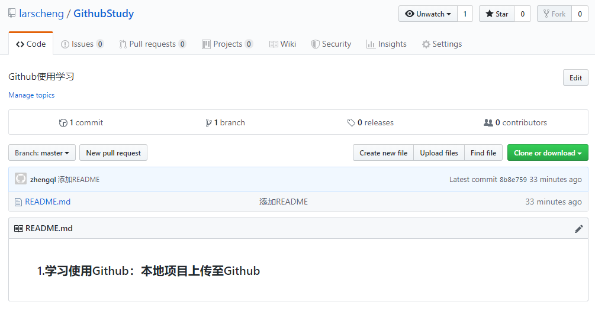
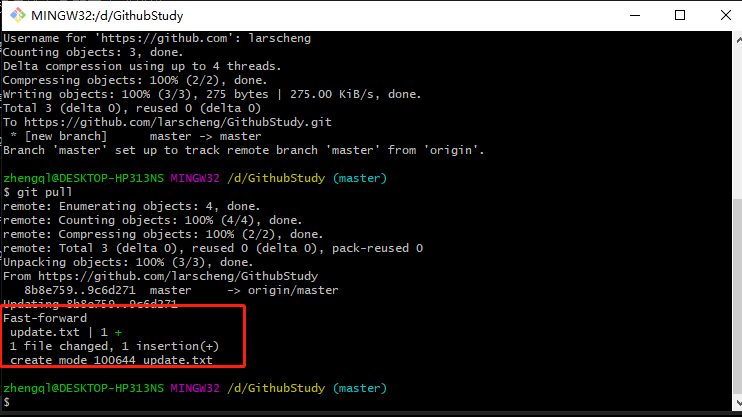
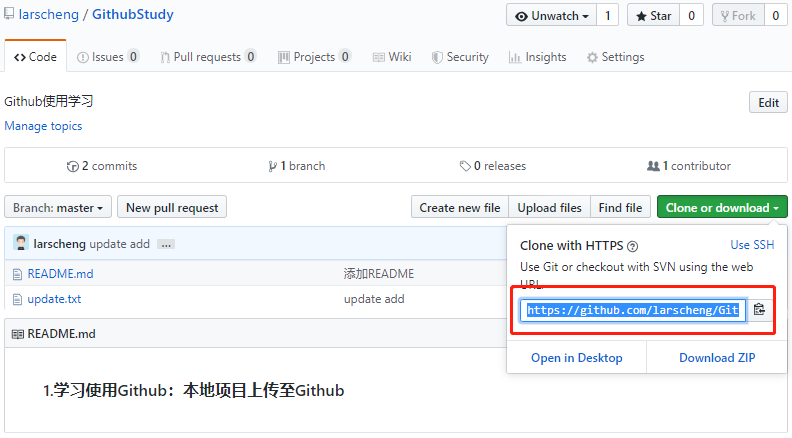
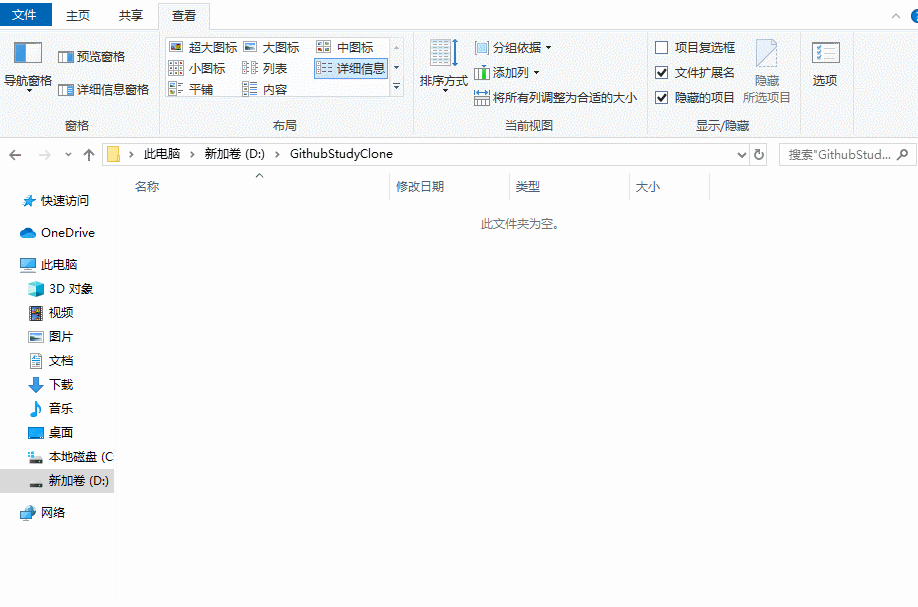
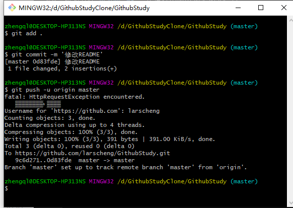

原文连接:https://www.cnblogs.com/larscheng/p/11839757.html
一些废话
本文的主旨是为初次接触Github的同学提供一个入门的教程，如果你已经是Github老鸟，可以忽略本文哦，另外本文只是抛砖引玉，其实最好的教程是官方文档！！！
Github目前虽然十分火热，但是对于第一次接触这一类产品的同学来说，上手还是有一定难度的
本文就聊一聊如何使用Github，相信读完本文，你一定可以掌握以下几点：
- Github是什么
- Github可以做什么
- Git与Github的关系
- 本地项目上传至Github
- 克隆远程仓库修改后提交
- 举一反三Github、Gitee、Coding
Github是什么
全球最大的同性交友平台--->全球最大的程序猿交流平台--->一个神奇的地方
Github是目前最火的网站之一，在这里很多的用户都是从事程序相关工作，又被戏称为全球最大的程序猿交流平台, 从最初仅活跃在程序员圈子中发展到现在各行各业的使用，经常用Github你就会发现，这真的是个神奇的地方，这里有很多五花八门，有趣的仓库。
那么Github到底是什么呢？
Wiki 百科上是这么说的
GitHub 是一个共享虚拟主机服务，用于存放使用Git版本控制的软件代码和内容项目。它由GitHub公司（曾称Logical Awesome）的开发者Chris Wanstrath、PJ Hyett和Tom Preston-Werner 使用Ruby on Rails编写而成。
官方是这么说的
GitHub is a code hosting platform for version control and collaboration. It lets you and others work together on projects from anywhere.
用我的工地英语翻译过来意思就是
GitHub是用于版本控制和协作的代码托管平台。它使您和其他人可以在任何地方共同处理项目。
虽然官方概括的很精简，但是过于官方，以至于我也一脸懵*，不过我们脑海里可以对她有以下几点印象：
- 存放代码、存放项目
- 版本控制
- 托管平台
- 共同处理项目
Github可以做什么
在了解了Github是什么后，如果你以为github就是个存代码的地方那你就太年轻了，你完全想不到全球网民的脑洞有多强大，Github都快玩出了花。
除了最基础的可用来存储和管理项目工程外，Github还可以做很多其他事情：
- 网站
- 个人博客
- 说明文档
- 管理配置文件
- 收集资料
- 面试简历
- 托管编程环境
- 写书、写小说
- 资源共享
- 招聘信息发布
- 老师布置作业，学生交作业
- 公益活动
- 等等等....五花八门千奇百怪
Git与Github的关系
从GitHub的介绍上我们不难看出，GitHub托管的是Git代码仓库。
这时候可能又有同学想问“这个Git又是什么鬼？他和Github又有什么关系”
Git是一个分布式的版本控制系统，可以对项目进行版本管理。而GitHub可以托管各种git库，并提供一个web界面
Git只是一个源代码管理工具（管理代码的版本） 并不能实现代码的共享。
而我们将本地的Git库（使用Git版本控制的软件代码和内容项目）上传到Github上，通过GitHub实现共享，达到不同之间的协同工作
所以在正式使用Github之前，需要先学会使用Git管理项目工程，即学会版本控制
Git的命令大全和原理性知识本文不做拓展，大家如有兴趣可以去Git官方文档翻阅学习哦
本地项目上传至Github
在开始本节介绍前呢需要大家准备以下环境和账号：
- Github账号
- 本地电脑安装Git
在Github中创建新的仓库
直接进入创建仓库页面：https://github.com/new
或者通过按钮进入创建页面：

具体的创建步骤如下图所示：

创建成功后会跳转到如下页面：

仔细看图上，不难发现，他已经告诉你接下来该怎么做，如何创建一个新的存储库（create a new repository on the command line）
下面我们按照他给的方式，来试一下看看效果~
配置本地Git环境
如果是第一次使用 Git，你需要设置署名和邮箱
$ git config --global user.name "用户名"
$ git config --global user.email "电子邮箱"设置成功后在Github提交记录中就会显示本次提交人的信息
创建本地项目
创建一个用于托管在Github中的项目工程
创建本地文件夹
创建一个名为 GithubStudy 的文件夹
本地git仓库初始化
进入 GithubStudy 文件夹 右键打开git bash here，执行如下命令，进行本地git仓库初始化
git init
完成后在当前项目里面会有一个.git文件夹 是用来记录当前本地仓库（如果看不到需要勾上显示隐藏文件）
创建文件
在文件夹下创建一个README.md，其内容为：
### 1.学习使用Github：本地项目上传至Github
添加到暂存区
此时把将项目的修改全部添加到暂存区 ，意思就是保存此次的所有修改
在GithubStudy 文件夹 右键打开git bash here，执行如下命令git add .(注意有点......)
ps:
git add .：添加全部文件到暂存区，git add README.md：指定文件添加到暂存区
提交到本地仓库
把当前暂存区添加的文件提交到本地仓库（提交后就表示创建了一个代码的版本）
在GithubStudy 文件夹 右键打开git bash here，执行如下命令 git commit -m '提交日志'
提交完成后就会把代码提交到.git文件夹（本地git仓库） 并且会自动创建一个代码的版本

指定远程服务器仓库
继续在git bash here中执行命令:git remote add origin {项目仓库地址}
注意：这里的项目仓库地址是你在github创建完新仓库时自动生成的，比如我刚刚创建后生成的是：https://github.com/larscheng/GithubStudy.git
执行完上述命令后，远程仓库的地址就指定好了，我们随时都可以推送项目
推送至Github
所有准备工作都已完成，现在就需要我们将项目推送至GitHub，你也可以理解为上传。
在GithubStudy 文件夹下右键打开git bash here，执行如下命令 git push -u origin master
注：初次提交时，会需要验证你的Github用户名和密码，根据命令提示输入后即可完成推送

此时你再进入Github刚刚创建的仓库中，刷新页面后，看到的应该是如下的样子：

在线修改项目并提交
这里，我在项目中创建了一个新的文件夹名叫update.txt 修改操作可以参考如下动态图
拉取最新版本
此时我们本地的项目已经不是最新的了，如何进行版本同步，获取最新的代码呢，执行如下命令即可
git pull
执行成功后，本地代码即为最新咯
克隆远程仓库修改后提交
这一节，主要演示的是：当你已有一个github项目，如何将它克隆至本地，修改后推送至github
这里还是以GithubStudy项目为演示,在Github下该仓库的首页中复制仓库地址：

克隆
新建文件夹GithubStudyClone
在GithubStudyClone 文件夹下右键打开git bash here，执行如下命令 git clone {项目仓库地址}
注意：这里的项目仓库地址是你在github创建完新仓库时自动生成的，比如我创建后生成的是：https://github.com/larscheng/GithubStudy.git，每个人的地址都会有所不同，记得替换哦
执行结果如下：

修改
修改文件README.md，在原有内容中加入如下信息：
### 2.学习使用Github：克隆远程仓库修改后提交添加+提交+推送
修改完成后，执行如下三条命令，即可推送至GitHub
在GithubStudyClone/GithubStudy 目录下右键打开git bash here，依次执行如下命令
git add .
git commit -m '修改README'
git push -u origin master
此时进入GitHub中查看
GithubStudy,你会发现我们刚刚的修改已经生效
对比
上面对于Github的入门使用已经基本介绍完了，Github目前以被微软收入囊中，对于国内用户来说由于网络的原因访问Github时往往不是那么的顺畅。
那么国内是否有Github同类型的产品呢？答案当然是有的
- 码云(gitee.com)是 OSCHINA.NET 推出的代码托管平台,支持 Git 和 SVN,提供免费的私有仓库托管。
- Coding 是一个面向开发者的云端开发平台，目前提供代码托管，运行空间，质量控制，项目管理等功能。
这两款产品作为代码托管平台来说与Github几乎一样，都是优秀的托管平台。
如果你烦恼于GitHub的访问限制，那完全可以考虑使用Gitee、或者Coding
所以问题来了，产品都换了，那怎么用呢？ GitHub我都是才学会，又要学Coding、Gitee
不用担心，操作一摸一样，你完全可以用上面Github讲解的操作流程来使用Gitee、Coding。
总结
本文不是Git的安装教程、也不是原理分析文章，本文旨在为初次接触Github的同学提供一个容易上手的中文演示
本文中也存在一些难点和坑点，例如
- Git命令的使用
- Github身份验证
- Github的其他功能使用
- 等等...
其实大家不用害怕，东西虽然多，但是都很好理解，当你遇到问题时要学会运用搜索引擎、学会阅读官方文档。
当然如果有问题也可以留言或者邮件联系我哦
如果阅读完本文后，你已经基本掌握了Github的使用，这里为大家提供一些高阶操作的文章：
- 文章作者: LarsCheng
- 文章链接: 本文首发于个人博客：https://www.larscheng.com/
- 发布方式：OpenWrite 最懂你的科技自媒体管理平台
- 版权声明: 本博客所有文章除特别声明外，均采用 CC BY-NC-SA 4.0 许可协议。转载请注明来自 LarsCheng's Blog！